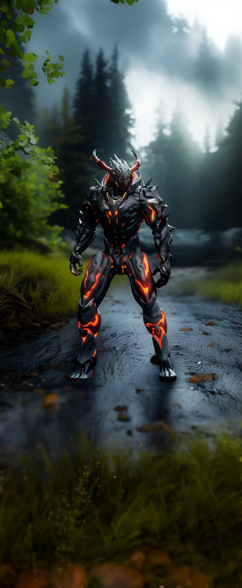

©
©
GENEZYS ARCHIVE · Earth 2 · Synthbot
Iterio
Mayhem Cleaver

Archive record
Ever since signing the Accord, Iterio's pilot claims to remember the same moment twice. The Schism Edge splits time into echoes and strikes both flanks as if from two places at once. Scholars on Earth 1 still argue whether that is technology or madness.
Combat signature
Schism Edge
140 Cosmara
260 Animus
280 Vitalis
Shortens echoing moments: Deals normal attack to enemies on the edges.
Genezys 02:04 ™&©2026LEGIONS
Return to LEGIONS